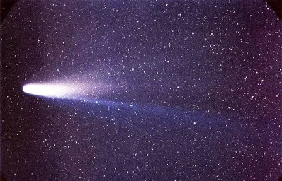

Voici les principales comètes du système solaire. Elles sont des petits corpss célestes constitués d'un noyau, mélange de glace et de poussière. Elles sont en orbite autour du Soleil.
Halley

Halley est la plus connue de toutes les comètes. Elle est identifiée vers 1700 par Edmond Halley comme étant l'objet céleste apparu en 1531, 1607 et 1682, avec une période de 76 ans. Son prochain passage au prérihélie est prévu le 28 juillet 2061.
Hale-Bopp
Hale-Bopp est l'une des comètes les plus brillantes du XXᵉ siècle. Elle a été visible à l'œil nu pendant 18 mois, ce qui constitue un record. Elle a été découverte le 23 juillet 1995. Son prochain passage au prérihélie est prévu le 28 juillet 2061.
Encke
Encke est une comète périodique qui a été découverte le 17 janvier 1786 par l'astronome français Pierre Méchain depuis Paris. Elle est nommée en l’honneur de l'astronome allemand Johann Franz Encke qui détermina sa périodicité (3,3 ans soit environ 3 ans et 4 mois). Son rayon est de 2,4 km.
Shoemaker-Levy 9
Shoemaker-Levy 9 abrégée en SL9, est une comète qui s'est disloquée lors de son approche de la planète Jupiter puis est entrée en collision avec elle entre le 16 et le 22 juillet 1994.Elle a été découverte dans la nuit du 24 mars 1993.
⬅️ Retour au Système Solaire ⬅️ Retour à l’accueil